MyAudioMaker tutorial
The in-app Tutorial, chapter by chapter and step by step. It has 8 chapters and 26 steps and shows every feature by driving the real program. The pictures were taken while the tutorial ran in the web version (npm run tutorial:docs takes them again).
Running the tutorial
- Start page › Start the tutorial, the Tutorial button at the right of the toolbar, Help › Tutorial or F11.
- In the card at the bottom right: Next / Previous step one step at a time, Auto play to the end, the chapter list to jump to a chapter, ✕ or Esc to stop at any time. Drag the card by its header to move it.
- The tutorial works in a project of its own (the 84 m² apartment template). Your open project comes back when it ends, and the settings it changes (theme, language, panels …) are put back.
- While it runs, popups (menus, Settings, the render window) open inside the main window instead of their own windows.
- Every feature is explained in detail in the User's guide.
Contents
- Start
- AI composing
- Arrangement
- Editing notes
- Lyrics and sheet
- Listening and mix
- Save and export
- Settings and help
1. Start
1. The start page
MyAudioMaker opens on the start page. Drag cards to move them; resize them by their corner.

2. Compose with AI
Click a genre to open the AI wizard with it. Type a topic and press “Compose song”: lyrics, melody and band are made at once.
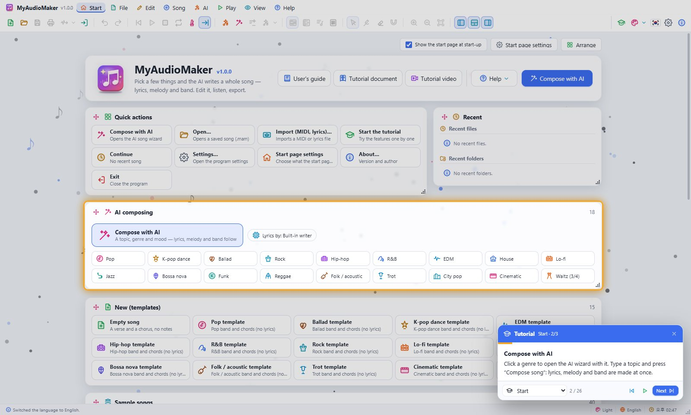
3. Sample songs
Forty sample songs by genre, five in each group. Click one to open and play it.

2. AI composing
4. The workspace
Left: AI Compose, instruments and sections. Centre: arrangement, piano roll, lyrics and lead sheet. Right: the outline and properties. Bottom: problems, messages and information.

5. The AI Compose panel
Choose a topic, genre, mood, lyrics language, key, tempo, form and vocal. The same seed makes the same song; the dice picks a new one.
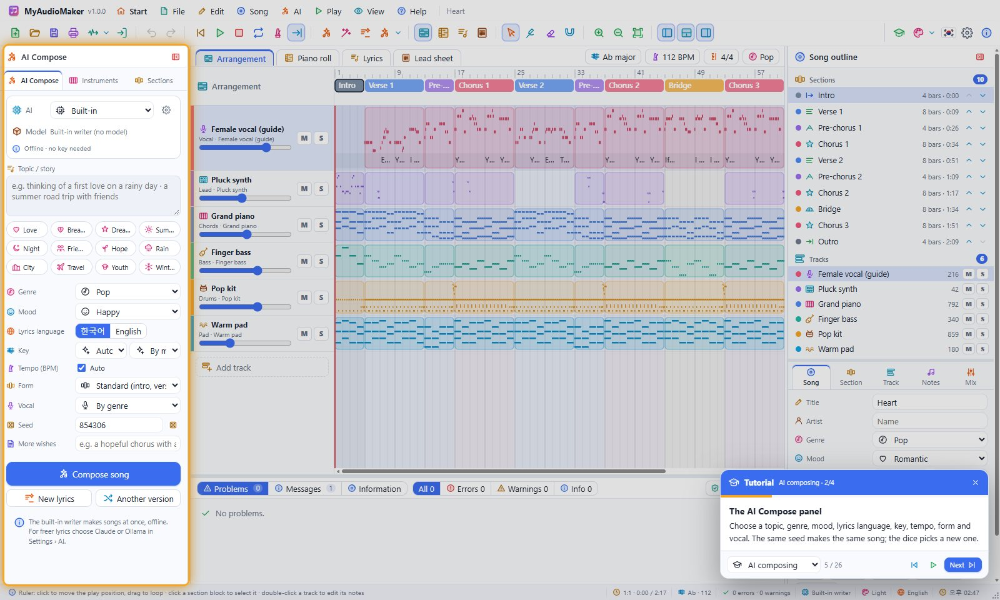
6. Which AI and model write?
Choose the AI and its model right here. The built-in writer works offline at once; Claude (your API key · Opus, Sonnet, Haiku) or Ollama (a model on this computer) write freer lyrics and chords. ⚙ opens Settings › AI.
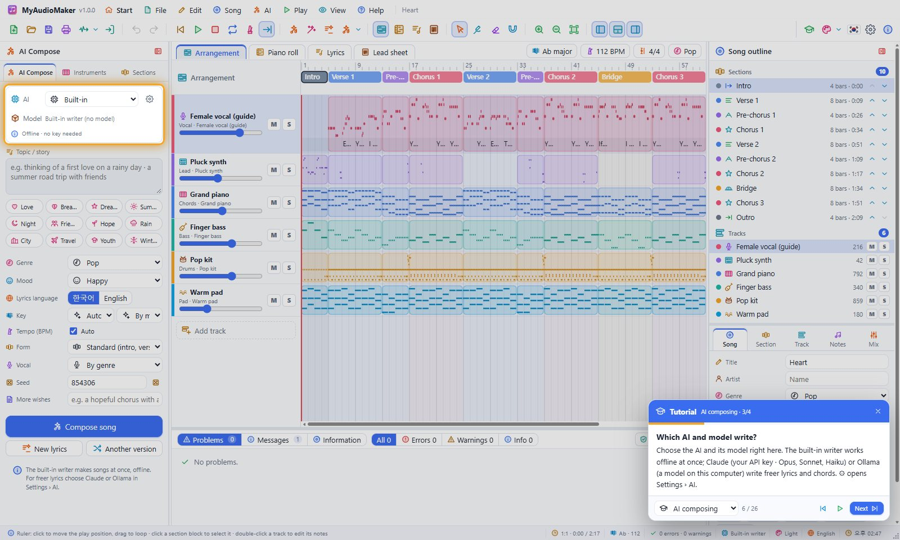
7. The AI song wizard
Every choice on one page: pick a theme, genre and mood as chips and press “Compose song” (Ctrl+Shift+G).

3. Arrangement
8. The arrangement
The whole song at a glance: the ruler shows bars, sections (coloured blocks) and chords; below, each track’s notes. Ctrl+wheel zooms.
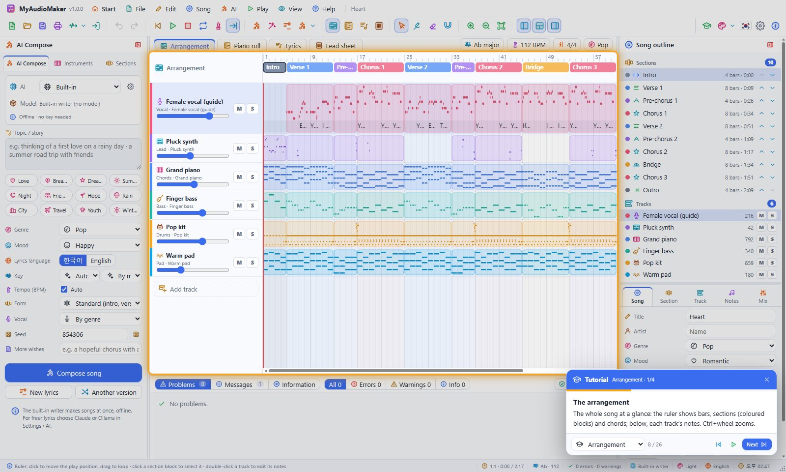
9. Sections
Click a section block to select it. Drag the ruler to set a loop; click it to move the play position.

10. Regenerate
In the Section tab, regenerate chords, melody, accompaniment, bass or drums one by one. Type chords like “C G | Am F” and the band follows.
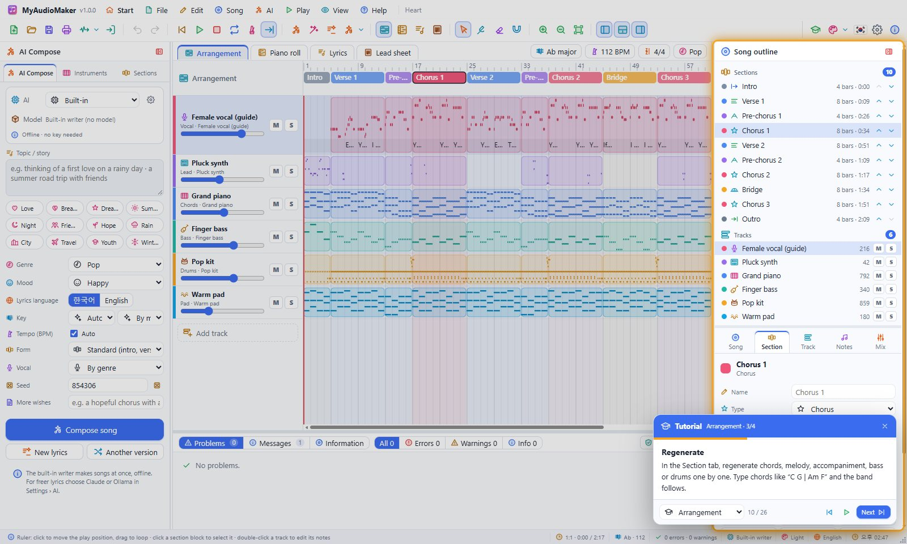
11. Tracks
Each track has M (mute), S (solo) and a volume. Double-click to edit its notes in the piano roll.
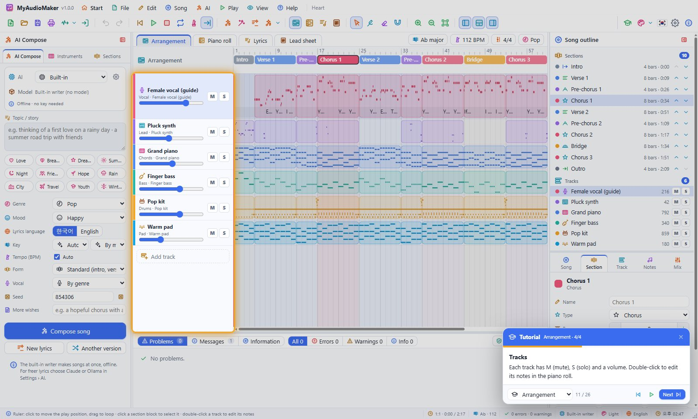
4. Editing notes
12. The piano roll
Drag notes to move them, their right edge to resize. Vocal notes show their syllables; the tinted rows are the chord’s tones.

13. Drawing tools
Select (V), Draw (D) and Erase (E), and the snap grid. Double-click empty space to add a note.

14. Instruments
44 instruments: keys, guitars, basses, strings, winds, synths, pads, drums and vocals. ▶ previews; double-click changes the selected track’s instrument.

5. Lyrics and sheet
15. Editing lyrics
Edit each section’s lyrics. The numbers are syllables and notes; red when they differ.

16. Fitting the melody
Changed lyrics get a melody that fits their syllables. The AI button rewrites just that section.
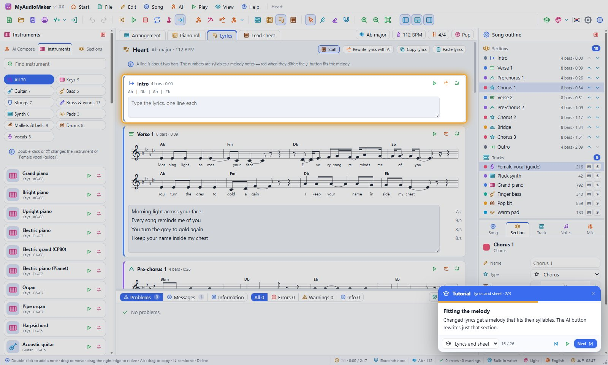
17. The lead sheet
The vocal melody in staff notation with chords above and lyrics below — ready to print.
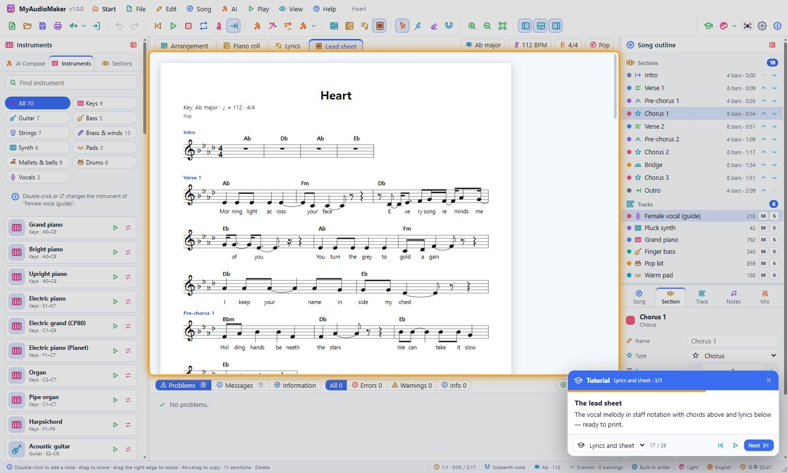
6. Listening and mix
18. Playing
Space plays and pauses. The built-in synthesizer plays every instrument; the guide voice sings the melody on vowels.

19. Loop and metronome
L loops, M switches the metronome. Pick a section and loop it to practise.
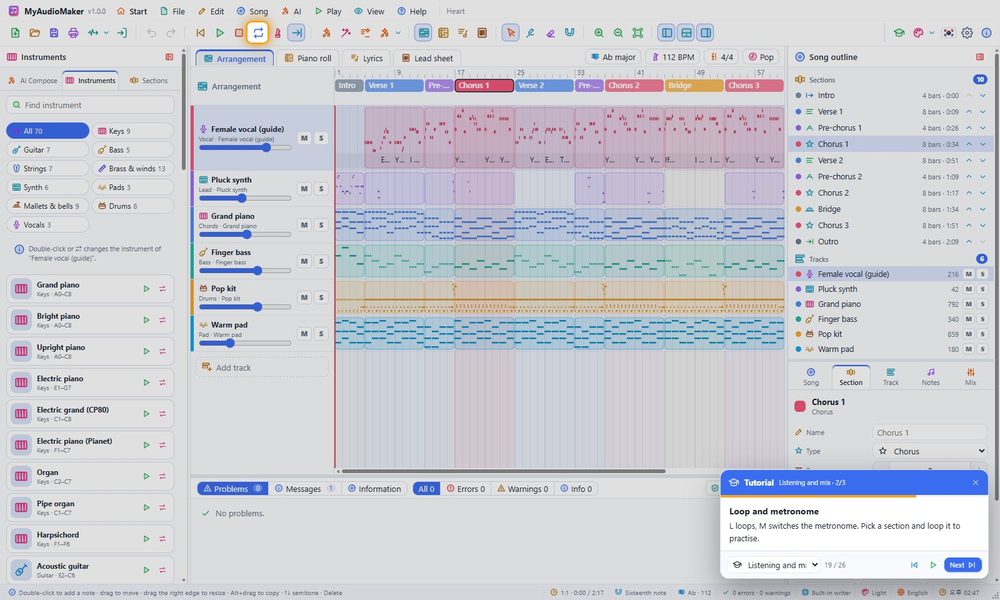
20. The mix
Set each track’s volume, pan and reverb, the master volume and the compressor.
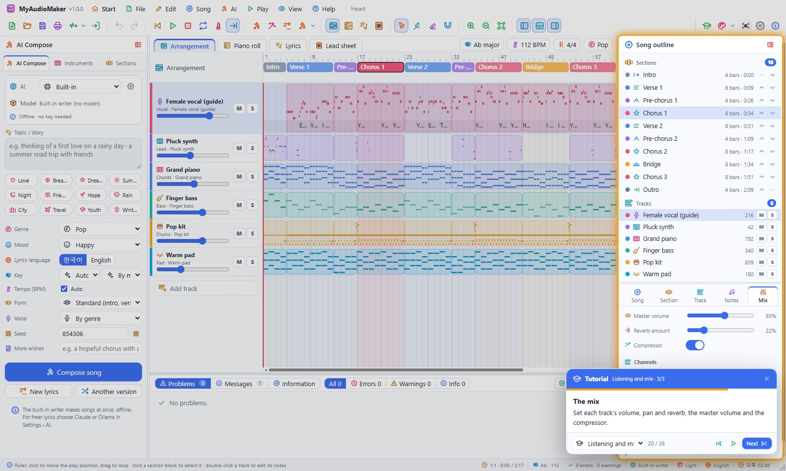
7. Save and export
21. Saving
Songs are saved as .mam files (Ctrl+S).
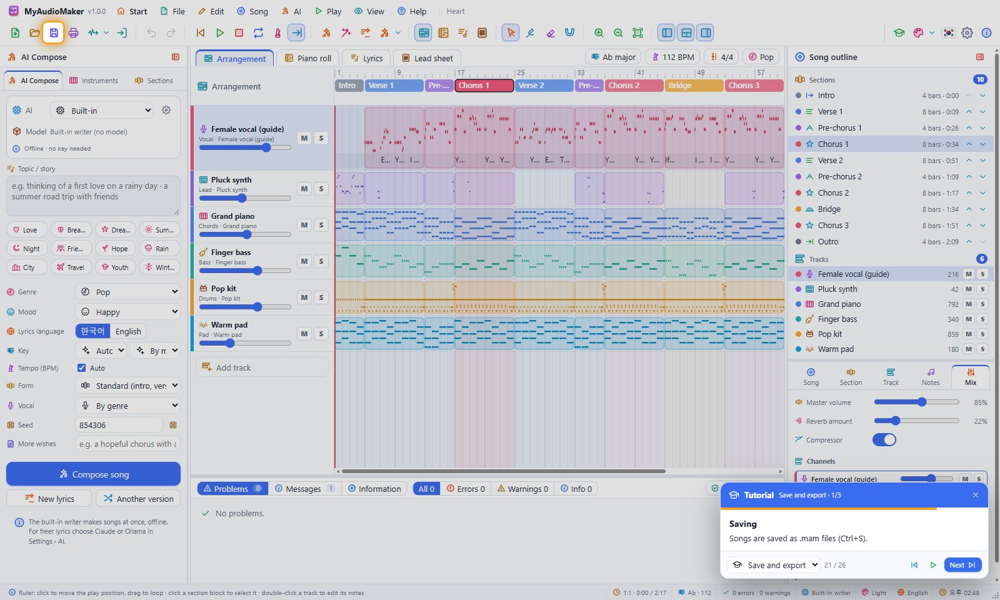
22. Export
Export WAV (16, 24, 32 bit), stems per track, MIDI (with lyrics), lyrics TXT, timed LRC and a chord chart.
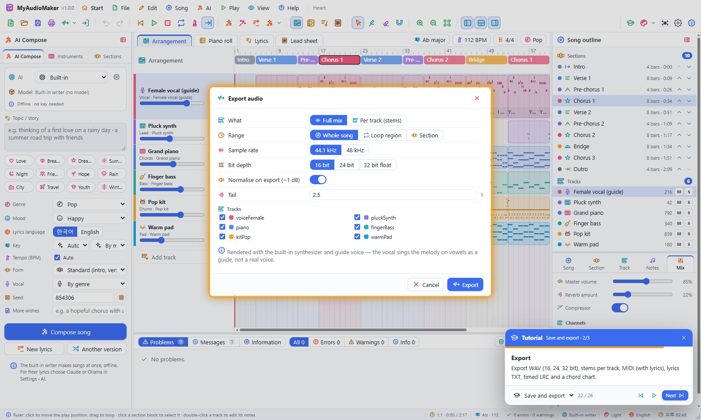
23. Printing
Preview and print the lead sheet, lyrics, chord chart, arrangement and summary, or save a PDF.

8. Settings and help
24. AI settings
Choose the built-in writer, Claude or Ollama; enter Claude’s key and model or Ollama’s address and model, and test the connection.
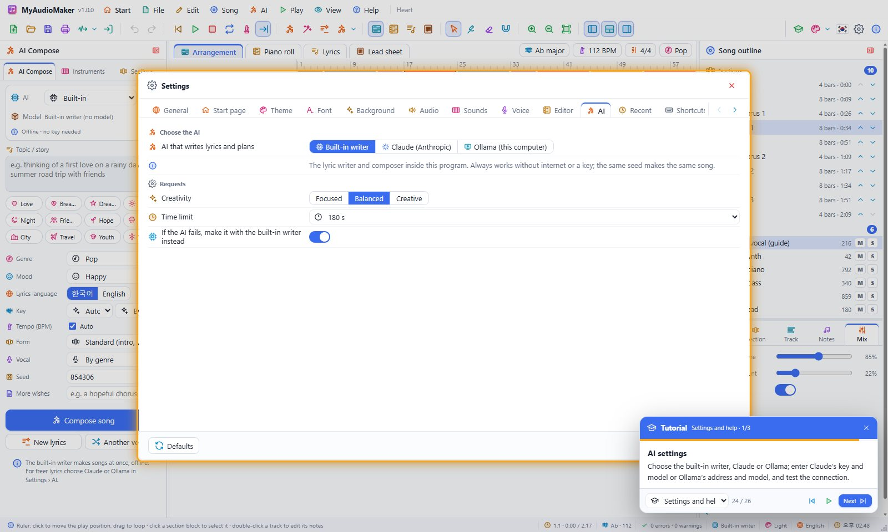
25. Shortcuts
Every shortcut is in Settings › Shortcuts.
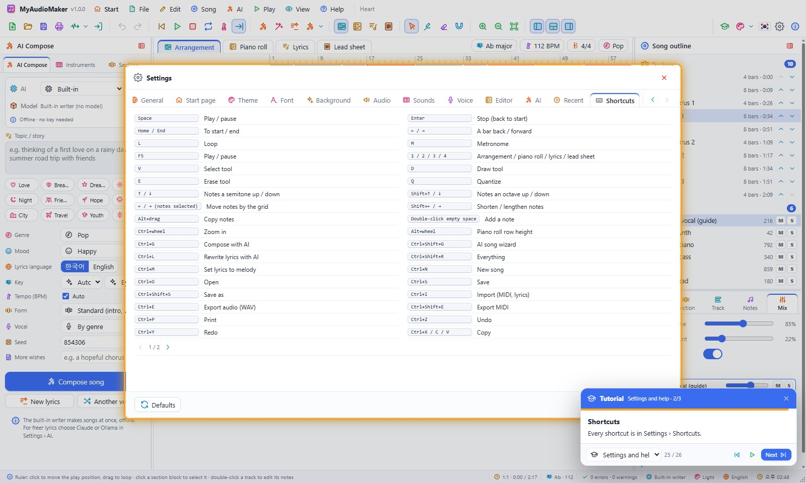
26. All done
Help › Tutorial (F11) shows this again any time. Now make a song of your own!

Run the tutorial again any time from Help › Tutorial (F11). A recording of the whole tour plays from Help › Tutorial video (once made with npm run tutorial:video).